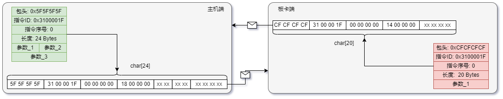

此处所说的ICD为指令交互方式下，主机端与板上/片上处理核约定的一套参数传输约定；约定规范了板卡与主机端传输参数的包头格式、发送方式与反馈方式
1. ICD指令交互流程
 指令包发送与反馈方式
- 一次交互过程为由主机对板卡发起请求，板卡发送反馈给主机的过程。请求和反馈为一串任意个字节组成的一段数据，在这串数据的开头，用一个特定字节长度的包头字段来标识此段数据所代表的含义。
- 以下是请求和反馈要求的包头格式，表格中各列的含义如下：
- 字段长度: 数据字段在请求/反馈数据中的位置
- 数据类型: 数据字段的解读所需的IEEE-754数据类型
- 值: 数据字段的默认值
- 含义: 数据字段所表示的含义
- 表中每一行代表一个各独立意义的**字段**，**字段**在描述指令数据中包含的一定数量字节的含义
- 请求/反馈包头后边都可以跟随任意数据类型/任意数量的数据，相应的改变
指令长度字段的值即可
- 指令ID字段为一条指令的唯一标识，所以一个ID固定的请求，其指令长度与指令中各参数的含义都是固定的
1.1. 请求包头
| 字段长度 | 数据类型 | 值 | 含义 |
| 0~3 | uint32 | 0x5F5F5F5F | 包头 |
| 4~7 | uint32 | 对每条指令唯一的ID | 指令ID |
| 8~11 | uint32 | 0 | 指令序号 |
| 12~15 | uint32 | 整条请求的字节数量 | 指令长度 |
1.2. 反馈包头
| 字节位 | 数据类型 | 值 | 含义 |
| 0~3 | uint32 | 0xCFCFCFCF | 包头 |
| 4~7 | uint32 | 请求包头中的ID | 指令ID |
| 8~11 | uint32 | 0 | 指令序号 |
| 12~15 | uint32 | 整条反馈的字节数量 | 指令长度 |
2. icd.json格式
- 基于上述对ICD指令交互方式的定义，提出一个软件与人类都可读的icd指令描述格式icd.json
- JSON（JavaScript Object Notation）是一种轻量级的数据交换格式，通常用于在不同应用程序之间传输数据，且其具有很好的人类可读性；JSON并不与任何特定编程语言相关联，因此可以在多种编程语言中轻松解析和生成
- icd.json基于JSON格式定义了基本描述结构
fpack、pname、cname、pmap、cmap，并提出了由这些基本结构提出了icd描述字段param、command、sequence
2.1. fpack 参数描述
- 含义: 表述一个基本的指令字段，其数据类型是什么，默认值是什么
- 格式:
["field type", "default value"]
- 解释:
- field type为此字段的类型，当前有如下可选项
uint32、int32、uint16、int16、uint8、int8、 float、 double：IEEE-754中定义的标准数据类型file：文件类型，值可为一个字符串类型的文件路径
- default value为这个字段的默认值，支持以数值描述、0x开头的字符串描述
2.2. pname 参数名
- 含义: 表述一个参数的名称，不单独出现，配合
pmap与cmap出现，并具有不同的含义
- 格式:
2.3. cname 指令名
- 含义: 表述一个指令的名称，不单独出现，配合
cmap出现
- 格式:
2.4. pmap 参数映射
- 含义: 表述一个参数名与字段的映射关系，是
param组的基本组成部分
- 格式:
- 解释:
- 示例如
"DAC采样率": ["uint32", 6000000000]
2.5. cmap 指令映射
- 含义: 表述一个指令名称与它对应的结构，是
param组的基本组成部分
- 格式:
cname: {
"send": [fpack/pname, ...],
"recv": [fpack/pname, ...]
}
- 解释:
send列表代表着一条指令的请求包格式，recv列表代表一条指令的反馈包格式- 每个列表中，从前到后指定了这一段字节数据的各个字段的含义和值，可以填入一个
fpack代表一个预定的不可变字段，填入一个param组中的pname来指定一个可变的字段，即为一个 参数
- 示例如下：
"指令1": {
"send": [
["uint32", "0x5F5F5F5F"],
["uint32", "0x31000001"],
["uint32", "0x00000000"],
["uint32", 24],
"参数2",
"参数1"
],
"recv": [
["uint32", "0xCFCFCFCF"],
["uint32", "0x31000001"],
["uint32", "0x00000000"],
["uint32", 20],
"参数3"
]
},
2.6. param 组
- 含义: pmap组成的组，是主机与板卡约定的所有可配置或可获取的参数的总和
- 格式:
{
"param": {
"pmap_1",
"pmap_2",
...
}
}
- 解释:
pmap中的pname部分，可在cmap中被引用，从而代表指令中此字段的值可变，是一个 参数- 各个
pmap中的cname都可作为NSUKit.set_param方法和NSUKit.get_param方法的name参数使用 {
"param": {
"参数1": ["uint32", "0x51"],
"参数2": ["float", 10.1],
"参数3": ["int8", 1]
}
}
2.7. command 组
- 含义: cmap组成的组，是主机与板卡约定的所有指令的集合
- 格式:
{
"command": {
"cmap_1",
"cmap_2",
...
}
}
- 解释:
- 各个
cmap中的cname都可作为NSUKit.execute方法的cmd参数使用，调用此方法时主机会按约定的ICD格式与板卡进行指令交互
2.8. sequence 组
此组预留，支持边长指令的实现
3. icd.json示例
{
"param": {
"参数1": ["uint32", "0x51"],
"参数2": ["float", 10.1],
"参数3": ["int8", 1]
},
"command":{
"指令1": {
"send": [
["uint32", "0x5F5F5F5F"],
["uint32", "0x31000001"],
["uint32", "0x00000000"],
["uint32", 24],
"参数2",
"参数1"
],
"recv": [
["uint32", "0xCFCFCFCF"],
["uint32", "0x31000001"],
["uint32", "0x00000000"],
["uint32", 17],
"参数3"
]
},
"指令2": {
"send": [
["uint32", "0x5F5F5F5F"],
["uint32", "0x31000001"],
["uint32", "0x00000000"],
["uint32", 16]
],
"recv": [
["uint32", "0xCFCFCFCF"],
["uint32", "0x31000001"],
["uint32", "0x00000000"],
["uint32", 16]
]
}
}
}
4. icd解析程序
关于icd文件解析程序的文档可以查看自定义处理层的icd_parser部分的介绍，以及中间价类ICDRegMw的文档
Copyright © 2023 耐数 naishu.tech 北京耐数电子有限公司